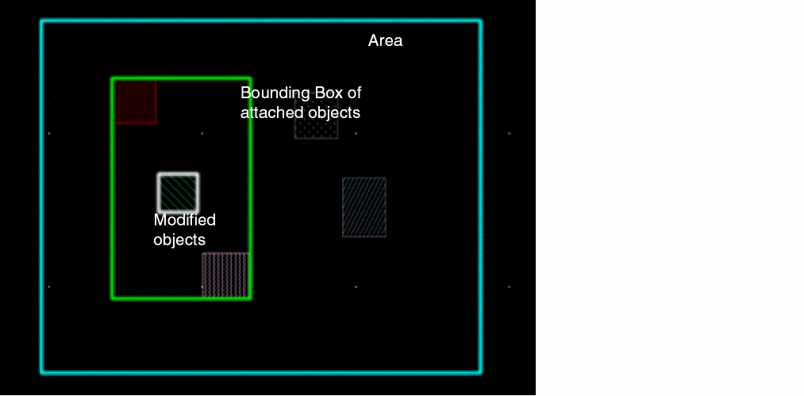

Colors that Identify Objects in an Area-based Design Partition
To prevent users from touching modified objects while using the Attach and Detach commands, colors are used to identify the following objects in a selected design partition:
The following screenshot shows different colors used to highlight modified objects.

Related Topics
Defining an Area-Based Design Partition
Return to top